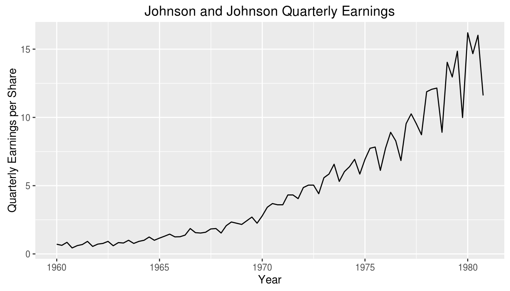
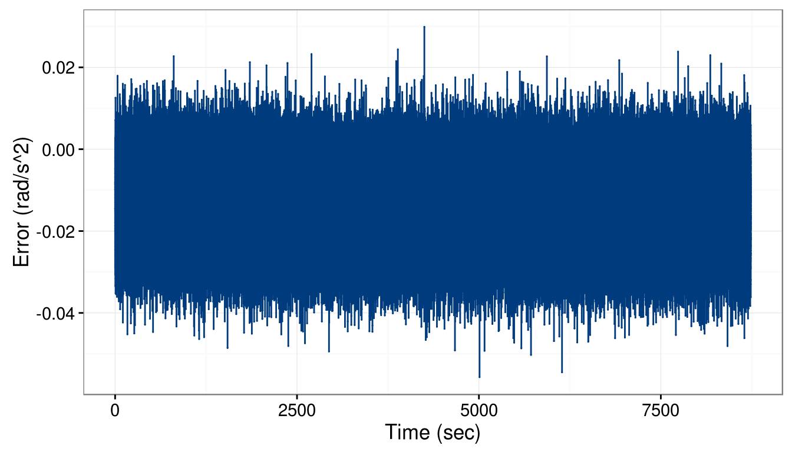
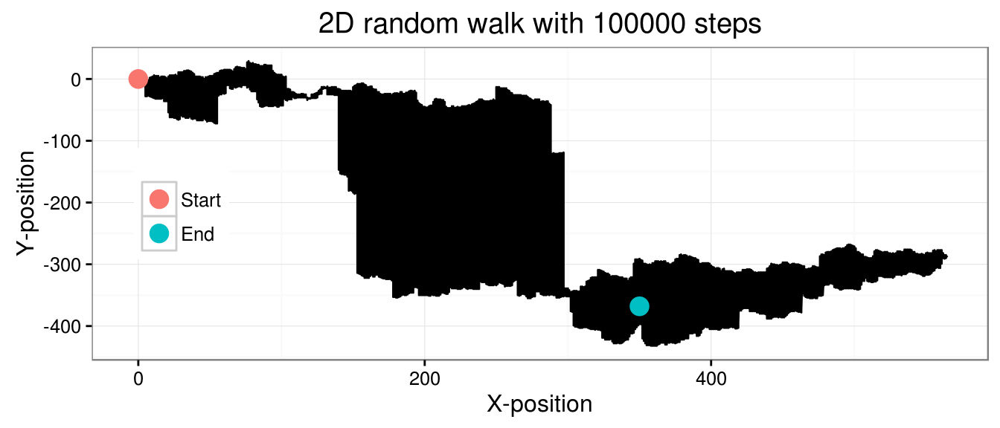
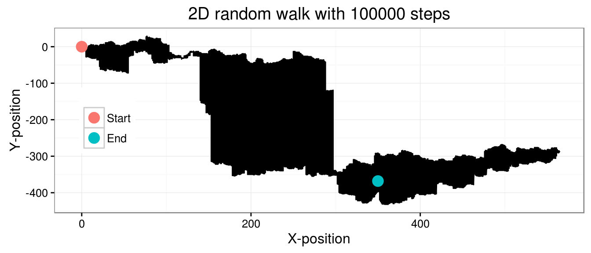
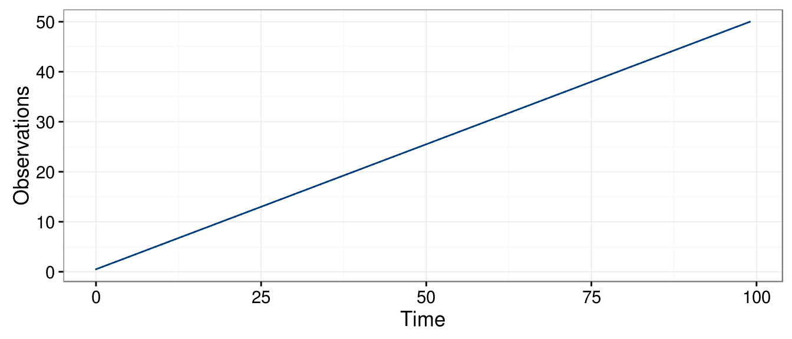
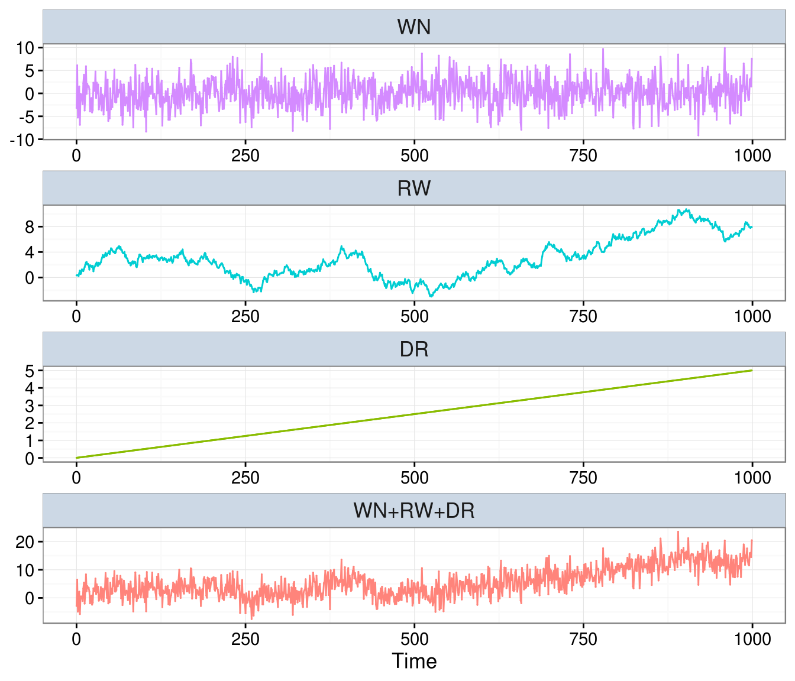

Chapter 1 Introduction
Prévoir consiste à projeter dans l’avenir ce qu’on a perçu dans le passé. Henri Bergson
After reading this chapter you will be able to:
- Describe what a time series is.
- Perform explore data analysis on time series data.
- Evaluate different characteristics of a time series.
- Classify basic time series models by equation and plots.
- Manipulate a time series equation using backsubstitution.
1.1 Time Series
Generally speaking a time series (or stochastic process) corresponds to set of “repeated” observations of the same variable such as price of a financial asset or temperature in a given location. In terms of notation a time series is often written as
\[\left(X_1, X_2, ..., X_n \right) \;\;\; \text{ or } \;\;\; \left(X_t\right)_{t = 1,...,n}.\]
The time index \(t\) is contained within either the set of reals, \(\real\), or integers, \(\integers\). When \(t \in \real\), the time series becomes a continuous-time stochastic process such a Brownian motion, a model used to represent the random movement of particles within a suspended liquid or gas, or an ElectroCardioGram (ECG) signal, which corresponds to the pulpitations of the heart. However, within this text, we will limit ourselves to the case the later case. That is, the focus will be on cases where \(t \in \integers\) better known as discrete-time processes. Discrete-time processes are where a variable is measured sequentially at fixed and equally spaced intervals in time akin to 1.1. This implies that we will assume two tenents:
- \(t\) is not random e.g. the time at which each observation is measured is known, and
- the time between two consequtive observation is constant.

Figure 1.1: Discrete-time can be thought of as viewing a number line with equally spaced points.
Moreover, the term “time series” can also represent a probability model for set of observations. For example, one of the fundamental probability models used in time series analysis is called a white noise process and is defined as
\[W_t \mathop \sim \limits^{iid} N(0, \sigma^2).\]
This statement simply means that \((W_t)\) is normally distributed and independent over time. This model may appear to be dull but as we will see it is a crucial component to constructing intricate and riveting models. Unlike the white noise process, time series are typically not independent over time. Suppose that the temperature in Champaign is unusually low, then it is reasonable to assume that tomorrow’s temperature will also be low. Indeed, such behavior would suggest the existence of a dependency over time. The time series methods we will discuss in this text consists of parametric models used to characterize (or at least approximate) the joint distribution of \((X_t)\). Often, time series models can be decomposed into two components the first of which is what we call a signal, say \((Y_t)\), and the second component is a noise, say \((W_t)\), leading to the model
\[X_t = Y_t + W_t.\]
Typically, we have \(E[Y_t] \neq 0\) while \(E[W_t] = 0\) (although we may have \(E[W_t | W_{t-1}, ..., W_1] \neq 0\)). Such models impose some parametric structure which represents a convenient and flexible way of studying time series as well as a means to evalute future values of the series through forecasting. As we will see, predicting future values is one of the main aspects of time series analysis. However, making predictions is often a daunting task or as famously stated by Nils Bohr:
“Prediction is very difficult, especially about the future.”
There are plenty of examples predictions which were revealed to be completely erroneous. For example, Irving Fisher, Professor of Economics at Yale University, famously predicted three days before the 1929 crash:
“Stock prices have reached what looks like a permanently high plateau”.
Another example is Thomas Watson, president of IBM, who said in 1943:
“I think there is a world market for maybe five computers.”
1.2 Exploratory Data Analysis for Time Series
When dealing with relatively small time series (e.g. a few thousands), it is often useful to look at a graph of the original data. Such graphs can be informative to “detect” some features of a time series such as trends and the presence of outliers.
Indeed, a trend is typically deemed present in a time series when the data exhibit some form of long term increase or decrease or combination of increases or decreases. Such trends could be linear or non-linear and represent a important part of the “signal” of a model. Here are few examples of non-linear trends:
Seasonal trends (periodic): These are the cyclical patterns which repeat after a fixed/regular time period. This could be due to business cycles (e.g. bust/recession, recovery).
Non-seasonal trends (periodic): These patterns cannot be associated to seasonal variation and can for example to external variable. For example, impact of economic indicators on stock returns. Note that such trends are often hard to detect based on a graphical analysis of the data.
“Other” trends: These trends have typically no regular patterns and are over a segment of time, known as a “window”, that change the statistical properties of a time series. A common example of such trends corresponds to vibrations observed before, during and after an earthquake.
Example: A traditional example of a time series is the quarterly earnings of the company Johnson and Johson. In the figure below, we present these earnings between 1960 and 1980:

One trait that the graph makes evident is the data contains a non-linear increasing trend as well as a yearly seasonal component. In addition, one can note that the variability of the data seems to increase with time. Being able to make such observations provides actionable information to select a suitable models for the data.
Moreover, when observing “raw” time series data it is also interesting to evaluate if some the following phenomenon occur:
- Change in Means: Does the mean of the process shift over time?
- Change in Variance: Does the variance of the process evolves with time?
- Change in State: Does the time series appear to change between “states” having distinct statistical properties?
- Outliers Does the time series contain some “extreme” observations? Note that this is typically difficult to assess visually.
Example: In the figure below, we present an example of displacement recorded during an earthquake as well as explosion.

From the graph, it can be observed that the statistical properties of the time series appear to change over time. For instance, the variance of the time series shifts at around \(t = 1150\) for both series. The shift in variance also opens “windows” where there appears to be distinct states. In the case of the explosion data this is particularly relevant around \(t = 50, \cdots, 250\) and then again from \(t = 1200, \cdots, 1500\). Even within these windows, there are “spikes” that could be considered as outliers most notably around \(t = 1200\) for explosion series.
Next, we consider an example about high-frequency finance to illustate to limitation our current framework.
Example: The figure below present the returns (i.e. informally speaking the changes in price) for Starbuck’s stock on the first of July 2011 during about 150 seconds (left panel) and about 400 minutes (right panel).
# Load packages
library(timeDate)
# Load "high-frequency" Starbucks returns for Jul 01 2011
data(sbux.xts, package = "highfrequency")
# Plot returns
par(mfrow = c(1,2))
plot(sbux.xts[1:89], main = " ", ylab = "Returns")
plot(sbux.xts, main = " ", ylab = "Returns")
It can be observed on the left panel that points are not equally spaced. Indeed, in high-frequency data interval between two points is typically not constant and is, even worse, a random variable. This implies that when a new observation will be available is in general unknown. On the right panel, one can observe that the variability of the data seems to change during the course of the trading day. Such phenomenon is well known in the finance community as a lot variation occurs at the start (and the end) of the day while the middle of the day is associated with small changes. Moreover, clear extreme observations can also be noted in this graph at around 09:30:34.
Finally, ….
# Load packages
library(gmwm)
library(imudata)
# Load IMU data
data(imu6, package = "imudata")
Xt = gts(imu6[,1], name = "Gyroscope data", unit = "sec", freq = 100)
# Plot gryoscope data
autoplot(Xt) + ylab("Error (rad/s^2)")
1.3 Basic Time Series Models
In this section, we introduce some simple time series models. Before doing so it is useful to define \(\Omega_t\) as all the information avaiable up to time \(t-1\), i.e.
\[\Omega_t = \left(X_{t-1}, X_{t-2}, ..., X_0 \right).\]
As we will see this compact notation is quite useful.
1.3.1 White noise processes
The building block for most time series models is the Gaussian white noise process, which can be defined as
\[{W_t}\mathop \sim \limits^{iid} N\left( {0,\sigma _w^2} \right).\]
This definition implies that:
- \(E[W_t | \Omega_t] = 0\) for all \(t\),
- \(\cov\left(W_t, W_{t-h} \right) = \boldsymbol{1}_{h = 0} \; \sigma^2\) for all \(t, h\).
Therefore, this process present an absence of temporal (or serial) dependence and is homoskedastic (i.e it has a constant variance). This definition can be generalized in two sorts of processes, the weak and strong white noise. The process \((W_t)\) is a weak white noise if
- \(E[W_t] = 0\) for all \(t\),
- \(\var\left(W_t\right) = \sigma^2\) for all \(t\),
- \(\cov \left(W_t, W_{t-h}\right) = 0\), for all \(t\), and for all \(h \neq 0\).
Note that this definition does not imply that \(W_t\) and \(W_{t-h}\) are independent (for \(h \neq 0\)) but simply uncorrelated. However, the notion of indepence is used to define a strong white noise as
- \(E[W_t] = 0\) and \(\var(W_t) = \sigma^2 < \infty\), for all \(t\),
- \(F(W_t) = F(W_{t-h})\), for all \(t,h\) (where \(F(W_t)\) denotes the distribution of \(W_t\)),
- \(W_t\) and \(W_{t-h}\) are independent for all \(t\) and for all \(h \neq 0\).
It is clear from these definitions that if a process is a strong white noise it is also a weak white noise. However, the converse is not true a shown in the following example:
Example: Let \(X_t \mathop \sim \limits^{iid} F_t\), where \(F_t\) denote a Student distribution with \(t\) degrees of freedom. Such process is a weak but not a strong white noise.
The code below presents an example of how to simulate a Gaussian white noise process
# This code simulate a gaussian white noise process
n = 100 # process length
sigma2 = 1 # process variance
Xt = gen.gts(WN(sigma2 = sigma2), N = n)
plot(Xt)
1.3.2 Random Walk Processes
The term random walk was first introduce by Karl Pearson in the early 19 hunders. As for the white noise, there exist a large range of random walk processes. For example, one of the simplest form of random walk are be explained as follows: suppose that you are walking on campus and your next step can either be on your left, your right, forward or backward (each with equal probability). Two realizations of such processes are represented below:
# Function computes direction random walk moves
RW2dimension = function(steps = 100){
# Initial matrix
step_direction = matrix(0, steps+1, 2)
# Start random walk
for (i in seq(2, steps+1)){
# Draw a random number from U(0,1)
rn = runif(1)
# Go right if rn \in [0,0.25)
if (rn < 0.25) {step_direction[i,1] = 1}
# Go left if rn \in [0.25,0.5)
if (rn >= 0.25 && rn < 0.5) {step_direction[i,1] = -1}
# Go forward if rn \in [0.5,0.75)
if (rn >= 0.5 && rn < 0.75) {step_direction[i,2] = 1}
# Go backward if rn \in [0.75,1]
if (rn >= 0.75) {step_direction[i,2] = -1}
}
# Cumulative steps
position = data.frame(x = cumsum(step_direction[, 1]),
y = cumsum(step_direction[, 2]))
# Mark start and stop locations
start_stop = data.frame(x = c(0, position[steps+1, 1]),
y = c(0, position[steps+1, 2]),
type = factor(c("Start","End"),
levels = c("Start","End")))
# Plot results
ggplot(mapping = aes(x = x, y = y)) +
geom_line(data = position) +
geom_point(data = start_stop, aes(color = type), size = 4) +
theme_bw() +
labs(
x = "X-position",
y = "Y-position",
title = paste("2D random walk with", steps, "steps"),
color = ""
) + theme(legend.position = c(0.1, 0.5))
}
# Plot 2D random walk with 10^2 and 10^5 steps
set.seed(2)
RW2dimension(steps = 10^2)
RW2dimension(steps = 10^5)  

Such processes inspired Karl Pearson’s famous quote that
“the most likely place to find a drunken walker is somewhere near his starting point.”
Empirical evidence of this phenomenon is not too hard to find on a Friday night in Champaign. In this class, we only consider one very specific form of randon walk, namely the Gaussian random walk which can be defined as:
\[X_t = X_{t-1} + W_t,\]
where \(W_t\) is a Gaussian white noise and with initial condition \(X_0 = c\) (typically \(c = 0\)). This process can be expressed differently by backsubstitution as follows:
\[\begin{aligned} {X_t} &= {X_{t - 1}} + {W_t} \\ &= \left( {{X_{t - 2}} + {W_{t - 1}}} \right) + {W_t} \\ &= \vdots \\ {X_t} &= \sum\limits_{i = 1}^t {{W_i}} + X_0 = \sum\limits_{i = 1}^t {{W_i}} + c \\ \end{aligned} \]
The code below presents an example of how to simulate a such process
1.3.3 Autoregressive Process of Order 1
An autoregressive process of order 1 or AR(1) is a generalization of both the white noise and random walk process which are both special case of an AR(1). A (Gaussian) AR(1) process can be defined as
\[{X_t} = {\phi}{X_{t - 1}} + {W_t},\]
where \(W_t\) is a Gaussian white noise. Clearly, an AR(1) with \(\phi = 0\) is a Gaussian white noise and when \(\phi = 1\) the process becomes a random walk.
Remark: We generally assume that an AR(1) (as well as other time series models) have zero mean. The reason for this assumption is only to simplfy the notation but it is easy to consider an AR(1) process around an arbitrary mean \(\mu\), i.e.
\[\left(X_t - \mu\right) = \phi \left(X_{t-1} - \mu \right) + W_t,\]
which is of course equivalent to
\[X_t = \left(1 - \phi \right) \mu + \phi X_{t-1} + W_t.\]
Thus, we will generally onyl work with zero mean processes since adding means is simple.
Remark: An AR(1) is in fact a linear combination of the past realisations of the white noise \(W_t\). Indeed, we have
\[\begin{aligned} {X_t} &= {\phi_t}{X_{t - 1}} + {W_t} = {\phi}\left( {{\phi}{X_{t - 2}} + {W_{t - 1}}} \right) + {W_t} \\ &= \phi^2{X_{t - 2}} + {\phi}{W_{t - 1}} + {W_t} = {\phi^t}{X_0} + \sum\limits_{i = 0}^{t - 1} {\phi^i{W_{t - i}}}. \end{aligned}\]
Under the assumption of infinite past (i.e. \(t \in \mathbb{Z}\)) and \(|\phi| < 1\), we obtain
\[X_t = \sum\limits_{i = 0}^{\infty} {\phi^i {W_{t - i}}},\]
since \(\operatorname{lim}_{i \to \infty} \; {\phi^i}{X_{t-i}} = 0\).
The code below presents an example of how an AR(1) can be simulated
# This code simulate a gaussian random walk process
n = 100 # process length
phi = 0.5 # phi parameter
sigma2 = 1 # innovation variance
Xt = gen.gts(AR1(phi = phi, sigma2 = sigma2), N = n)
plot(Xt)
1.3.4 Moving Average Process of Order 1
As we have seen in the previous example, an AR(1) can be expressed as a linear combination of all past observation of \((W_t)\), the next process, called a moving average process of order 1 or MA(1) is (in some sense) a “truncated” version of an AR(1). It is defined as
\begin{equation} X_t = \theta W_{t-1} + W_t, \label{eq:defMA1} \end{equation}where (again) \(W_t\) denotes a Gaussian white noise process. An example on how generate an MA(1) is given below:
# This code simulates a gaussian white noise process
n = 100 # process length
sigma2 = 1 # innovation variance
theta = 0.5 # theta parameter
Xt = gen.gts(MA1(theta = theta, sigma2 = sigma2), N = n)
plot(Xt)
1.3.5 Linear Drift
A linear drift is a very simple detemrinistic time series model which can be expressed as
\[X_t = X_{t+1} + \omega, \]
where \(\omega\) is a constant and with the initial condition \(X_0 = c\), an arbitrary constant (typically zero). This process can be expressed in a more familiar form as follows:
\[ {X_t} = {X_{t - 1}} + \omega = \left( {{X_{t - 2}} + \omega} \right) + \omega = t{\delta} + c \]
Therefore, a (linear) drift corresponds to a simple linear model with slope \(\omega\) and intercept \(c\).
A drift can simply be generated used the code below:
# This code simulate a linear drift with 0 intercept
n = 100 # process length
omega = 0.5 # slope parameter
Xt = gen.gts(DR(omega = omega), N = n)
plot(Xt)
1.3.6 Composite Stochastic Processes
A composite stochastic processes can be defined as the sum of underlying (or latent) stochastic processes. In this text, we will use the term latent time series as a synomym to composite stochastic processes. A simple example of such process is for example
\[\begin{aligned} Y_t &= Y_{t-1} + W_t + \delta\\ X_t &= Y_t + Z_t, \end{aligned}\]
where \(W_t\) and \(Z_t\) are two independent Gaussian white noise processes. This model often used as first tool to approximate the number of individuals in the context ecological population dynamic. For example, suppose we want to study the popiulation of Chamois in the Swiss Alpes so let \(Y_t\) denote the “true” number of individual in this population at time \(t\). It is reasonable that \(Y_t\) is (approximately) the population at the previous time \(t-1\) (e.g the previous year) plus a random variation and a drift. This random variation is due to the natural random in ecological population and reflects changes in number of predators, in aboundance of food or weather condition. On the other hand, the drift is often of particular interest for ecologist as it can used to determine the “long” term trends for the population (e.g. is the population increasing, stable or decreasing). Of course, \(Y_t\) (the number of individauls) is typically unknown and we observed a noisy version of it, denotes as \(X_t\). This process corresponds to the true population plus a measruementr error as some Chamois may not be observed individuals and some counted several times. Interestingly, this process can clearly be expressed as a latent time series model (or composite stochastic process) as follows:
\[\begin{aligned} R_t &= R_{t-1} + W_t \\ S_t &= \delta t \\ X_t &= R_t + S_t + Z_t, \end{aligned}\]
where \(R_t\), \(S_t\) and \(Z_t\) denote, respectively, a radnom walk, a drift and a white noise. The code below can be used to simulate such data:
n = 1000 # process length
delta = 0.005 # delta parameter (drift)
sigma2 = 10 # variance parameter (white noise)
gamma2 = 0.1 # innovation variance (random walk)
model = WN(sigma2 = sigma2) + RW(gamma2 = gamma2) + DR(omega = delta)
Xt = gen.lts(model, N = n)
plot(Xt)
In the above graph, the three latent (unobserved) processes are first depicted (i.e. white noise, random walk and drift) and then the sum of the three is present (i.e. \((X_t)\)).